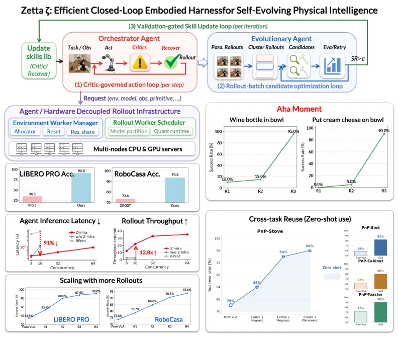
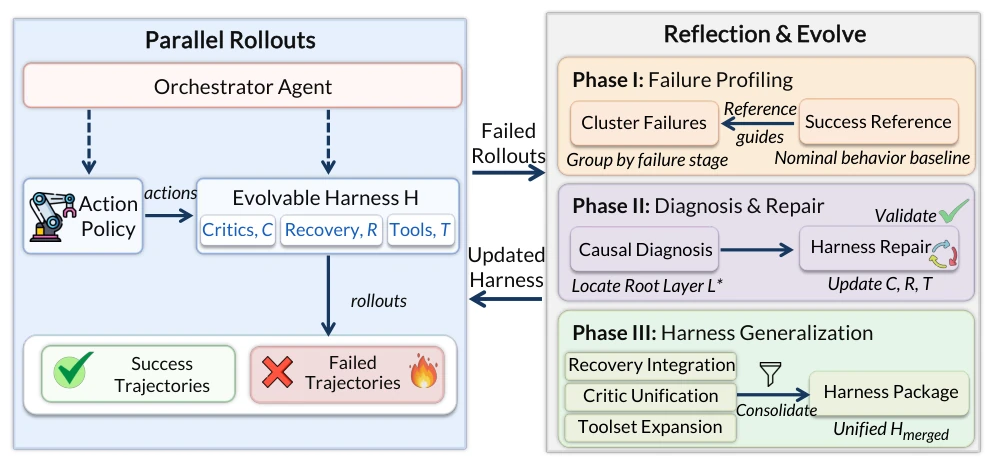
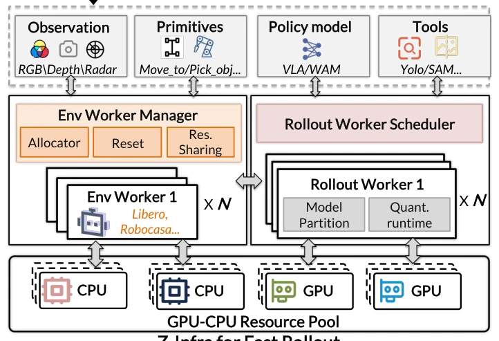
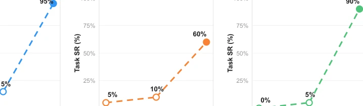
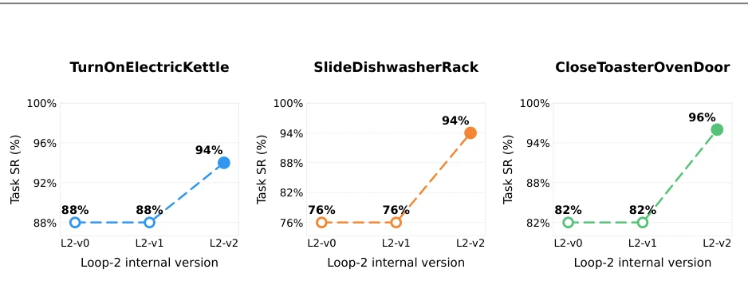
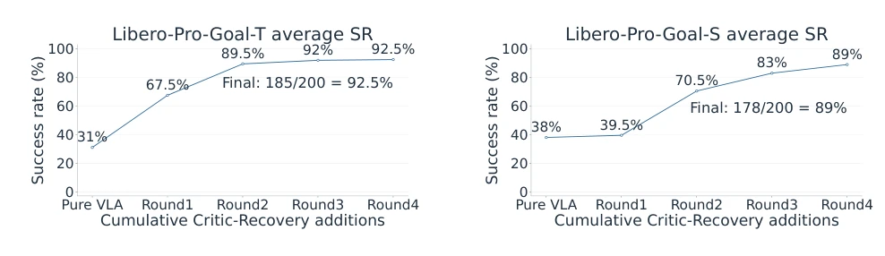
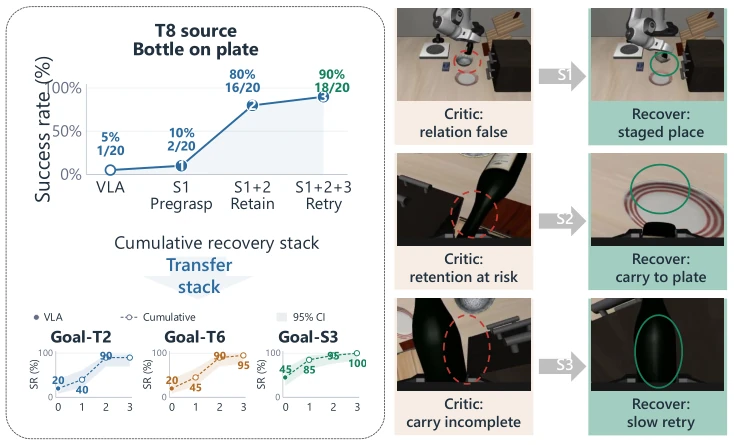
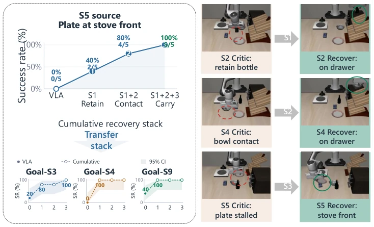
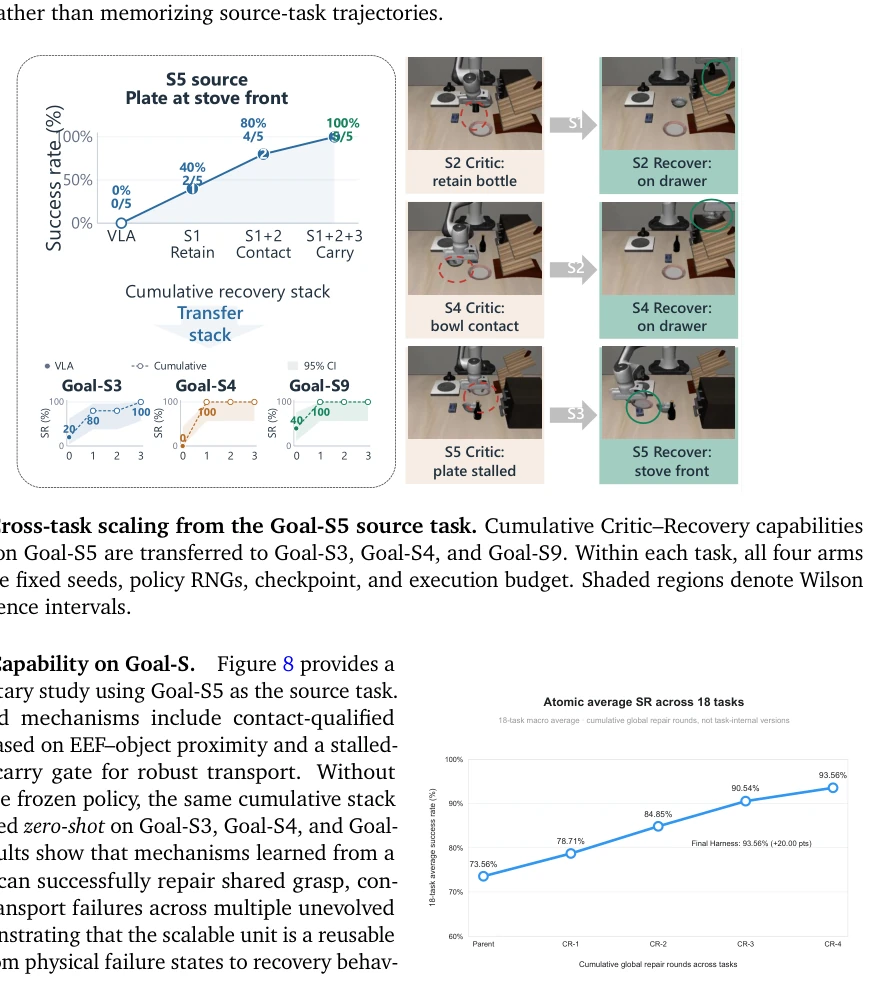
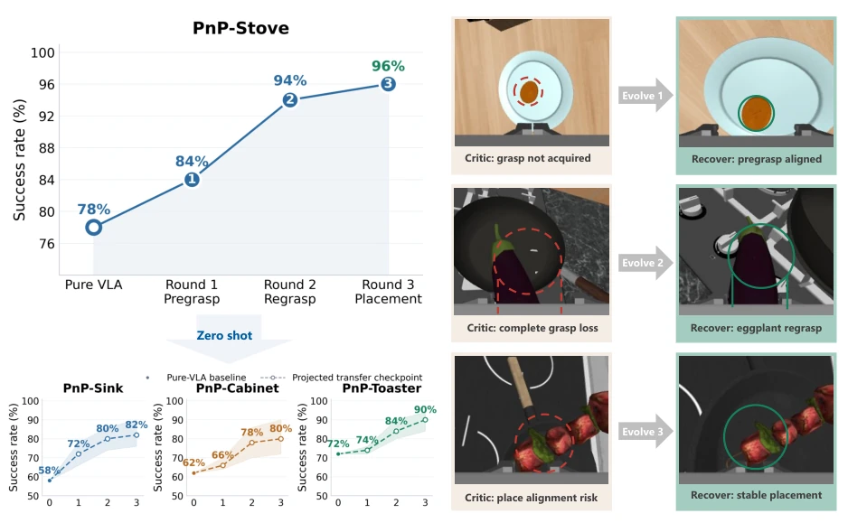

Zetta's "embodied system with self-evolution capabilities" is indeed noteworthy. It does not merely shout the "end-to-end" slogan like some papers, but honestly admits the "cognitive limitations" of large models in physical interaction—too slow to react, unable to keep up with millisecond-level changes in the physical world. It implements a "Runtime Critic" mechanism, equivalent to installing a real-time supervisor for the robot, which immediately halts and repairs upon detecting anomalies, rather than playing the wise man after the fact when the task fails. However, the system's reliance on "code as skill" is a double-edged sword: although it achieves zero-shot transfer and "aha moments", once encountering unseen physical anomalies, this code-based repair logic might also be as "rigid" as humans. Moreover, boosting inference speed by 11 times sounds great, but the premise is that the infrastructure must be robust enough, otherwise it is impossible without sufficient resources. Overall, this is a powerful attempt to pull embodied intelligence back from "open-loop performance" to "closed-loop practice", but there is still a distance from true general-purpose robots.
The biggest pain point currently faced by embodied intelligence is the disconnect between "open-loop" and "physical reality". Existing end-to-end policy models (such as VLA/WAM) [3, 4], although strong in semantic understanding, are open-loop during inference, lacking real-time perception and correction capabilities for physical states (such as object slipping, collision), leading to task chain failures triggered by minor disturbances. And existing embodied intelligence frameworks (such as LLM-based Agents) [5] are mostly also open-loop, only able to reflect after the turn ends, unable to dynamically adjust decisions based on environmental changes during task execution. This "post-hoc" reflection cannot cope with the high-frequency dynamic needs of physical interaction, leading to difficulties in experience reuse and poor generalization capabilities. Zetta aims to solve this core contradiction, by introducing online-evolving Runtime Critics and recovery skills, building a true closed-loop system, enabling the robot to self-correct during execution, achieving continuous evolution of physical intelligence.

Figure 1 | Zetta closes the loop for embodied self-evolution. Frequent runtime critics trigger recoveries during execution, while verified failures are distilled into reusable critic and recovery skills across rollouts. A hardware-decoupled rollout layer scales this process across heterogeneous environments, models, CPUs, and GPUs. Zetta enables sustained same-task improvement, zero-shot skill transfer, robotic "Aha moment", and accelerated agent execution.
The core of Zetta is a "dual-agent governance + evolutionary architecture", containing a frozen base Policy and an evolvable "Harness" (H = {C, R, T}). The overall process is divided into two closed loops: online execution and offline evolution. In the online phase, the high-frequency Runtime Critic (C) monitors the trajectory in real-time; once an anomaly is detected (such as collision), it immediately triggers the recovery skill (R) and calls the toolset (T), with the Orchestrator deciding whether to take over. The offline phase achieves evolution through three time-scale cycles: 1) Action frequency cycle: C runs at action frequency, real-time intervention; 2) Rollout batch optimization cycle: cluster failed trajectories, locate causal root causes (Top-Down hierarchical diagnosis), generate candidate repair code; 3) Verification gated update cycle: only when the new skill improves success rate and generalization on the validation set, is it packaged into the Harness. In addition, Zetta is equipped with Z-Infra infrastructure, by decoupling logic and hardware (Env Workers and Rollout Workers), utilizing Ray to achieve asynchronous scheduling and batching of heterogeneous resources (CPU/GPU), significantly improving the throughput of parallel Rollout.

Figure 2 | Overview of the Zetta evolutionary framework. The system operates in a continuous loop between online execution and offline evolution. (Left) Parallel Rollouts: Action policy executes tasks, monitored by an Evolvable Harness (H) composed of Critics (𝐶), Recovery (𝑅), and Tools (𝑇), all under the high-level adjudication of an Orchestrator Agent. Rollouts are categorized into success and failure trajectories. (Right) Reflection & Evolve: Failed trajectories trigger a three-phase offline evolution cycle. Phase I profiles failures by clustering them against successful reference baselines. Phase II performs causal diagnosis to locate the root failure layer (𝐿∗), followed by minimal harness repair to update 𝐶, 𝑅, and 𝑇. Phase III generalizes seed-specific repairs into a unified, versi

Figure 3 | Three-layer architecture of the rollout infrastructure. The Control Plane routes agent requests to specialized Env Workers and Rollout Workers, which manage environment simulation and model inference respectively.
Experiments were conducted on two benchmarks: LIBERO-Pro and RoboCasa. Baselines include pure VLA policies and existing embodied intelligence methods. Results show that Zetta achieved 90.8% success rate on LIBERO-Pro and 93.6% on RoboCasa, significantly outperforming the baselines. Key findings include: 1) "Aha moment": With evolutionary iterations, success rate does not grow linearly, but appears a dramatic leap after discovering key physical bottlenecks (such as grasp hold) (e.g., jumping from 15% to 95%); 2) Zero-shot transfer: Skills learned in the PnP-Stove task can be zero-shot transferred to similar tasks like PnP-Sink, with significant success rate improvement; 3) Efficiency improvement: Inference latency reduced by 91% (11.1x speedup), Rollout throughput increased by 20.6 times. Ablation studies indicate that hierarchical diagnosis and verification gated mechanisms are crucial for preventing overfitting and ensuring generalization.

Figure 4 | Physical-intelligence “Aha” moments on LIBERO-Pro. Similar to RoboCasa, v0 denotes the Pure-VLA baseline and v1 represents early symptomatic repairs (e.g., staging or local gates) that yield stagnant performance. The “Aha” at v2 occurs when the agent identifies and resolves the decisive physical bottleneck (e.g., grasp retention or semantic approach), triggering a sharp increase in execution reliability.

Figure 5 | Physical-intelligence “Aha” moments on RoboCasa. L2-v0 is the original Pure-VLA baseline, while L2-v1 is an intermediate internal version. The flat L2-v0–L2-v1 segments summarize a period where early candidate fixes overfit individual failures. Once the agent identifies the key physical bottleneck (e.g., EEF alignment or centered contact), L2-v2 produces a sharp success-rate increase.

Figure 6 | Cumulative physical-intelligence scaling on LIBERO-Pro Goal. Average performance across ten tasks under Goal-T and Goal-S perturbations. Each point denotes a selected cumulative harness version. The base VLA is frozen throughout evolution.

Figure 7 | Cross-task scaling from the Goal-T8 source task. Three cumulative Critic–Recovery capabilities discovered on Goal-T8 are transferred to Goal-T2, Goal-T6, and Goal-S3. Curves report complete fixed- seed evaluations of each cumulative stack. Shaded regions denote Wilson 95% confidence intervals. The right-hand frames illustrate the corresponding failure and recovery mechanisms rather than additional transfer measurements.

Figure 8 | Cross-task scaling from the Goal-S5 source task. Cumulative Critic–Recovery capabilities discovered on Goal-S5 are transferred to Goal-S3, Goal-S4, and Goal-S9. Within each task, all four arms use the same fixed seeds, policy RNGs, checkpoint, and execution budget. Shaded regions denote Wilson 95% confidence intervals.

Figure 9 | Cumulative reflection scaling across 18 RoboCasa tasks. The macro-average suc- cess rate increases from 73.56% for the frozen parent harness to 78.71%, 84.85%, 90.54%, and 93.56% after four cumulative global repair rounds. Each checkpoint retains the previously validated critic, recovery, and tool capabilities.

Figure 10 | Reflection-driven scaling and transfer on PnP tasks. On PnP-Stove, successive rounds add object-relative pregrasp alignment, bounded regrasp after grasp loss, and stable placement. The lower panels apply the cumulative checkpoints to PnP-Sink, PnP-Cabinet, and PnP-Toaster without an additional training or evolution loop. The right-hand panels show the failure signatures identified by the critic and the corresponding recoveries.